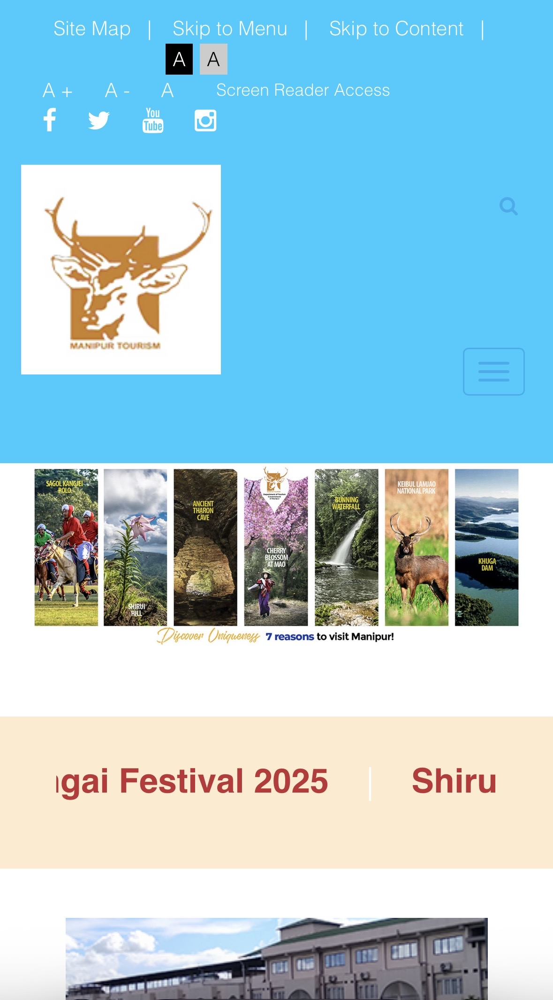
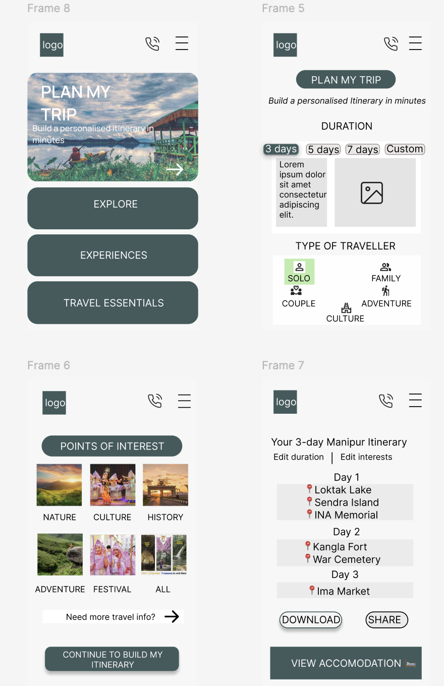

I'm Vijayshree; a UX designer curious about how people think, how they make decisions, and how design can quietly make life easier. Currently exploring the intersection of research, storytelling, and interface design — one project at a time.
Good design should feel invisible — it removes friction before the user ever notices it was there.
Design philosophyTravellers couldn't plan a trip to Manipur with confidence. The website informed but never guided. This is the story of how research, IA restructuring, and a clear "Plan Your Trip" flow changed that.
The Manipur Tourism website had a fundamental mismatch between what users needed and what it offered. Travellers — especially first-timers — came looking for help planning a trip: itineraries, transport, safety, permits. What they found was a passive information archive, structured around government categories rather than human journeys.
My goal was to understand where and why the experience broke down, then redesign it around a single clear product strategy: help travellers plan and execute a memorable trip to Manipur in under 15 minutes.

